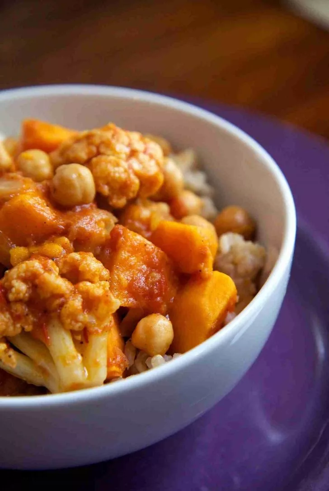

VEGAN TARİFLER
Siyah Kinoali BÖrülce Mücveri

Malzemeler
<>1 bardak haslanmış börülce
<>1 bardak haslanmış arpa
<>1 bardak siyah kinoa
<>1 adet ince dogranmış sogan
<>1 çorba kaşığı hardal
<>1 çorba kaşığı domates salçası
<>Kimyon
<>Kırmızı toz biber
S
<>Kekik
<>Tuz
Baglamak icin
<>Un (takriben 2 corba kasigi)
Yapılışı
⚫Arpayı ve börülcenin bir kısmını rondoda neredeyse püre haline getirin, hiç su eklemeyin.
⚫Derin bir karıştırma kasesinde tüm malzemeleri karıştırıp damak zevkinize gore baharatları ekleyin.
⚫Yarim çorba kaşığı un ekleyip yine karıştırın, kofte olusturma denemesinde bulunun.
⚫Eger karışım cok cıvık değilse ve dağılmadan, yapışık duruyorsa koftelerinizi sekillendirmeye geçebilirsiniz.
⚫Dağılıyorsa biraz daha un ekleyin, yine kofte yapmayı deneyin, dağılıyorsa biraz daha un ekleyin,
⚫Ceviz büyüklüğünde topcuklar alip elinizle kofte şekline getirin ve kızgın bir tavada arzu ettiginiz miktarda sıvı yag ile pişirin.
⚫Pisirme kısmını fırında da yapabilirsiniz, üzerlerini yaglamanızı tavsiye ederim.
Körili Patatesli Nohut

Malzemeler
<>Malzemeler 250 gr Nohut Köri
<>1 adet küçük Havuçü
<> 1 adet irice Patates
<> 2 adet Domates
1 bardak Su 2 sap Yeşil Soğan ¼ çay kaşığı Hindistan Cevizi Tuz, Karabiber
Yapılışı
⚫N ohutları bir gece önce suya koyun ve bekletin.
⚫Önce patatesleri hafifçe haşlayınız. Küçük küçük
⚫Ertesi gün bir kapta, süzülmüş nohutları, bir bardak suyu, hepsi küçük küçük doğranmış havuç, patates, domates, yeşil soğan, hindistan cevizi, istediğiniz kadar köri tozunu, tuz ve karabiberi bir tava içinde karıştırınız. Karışımın üstünü örterek, havuçlar yumuşayana kadar pişirin. Eğer suyu azalırsa, biraz su katınız.
⚫Bu karışımı yağsız ya da az yağ ile pişirilmiş pilav ile servis yapını